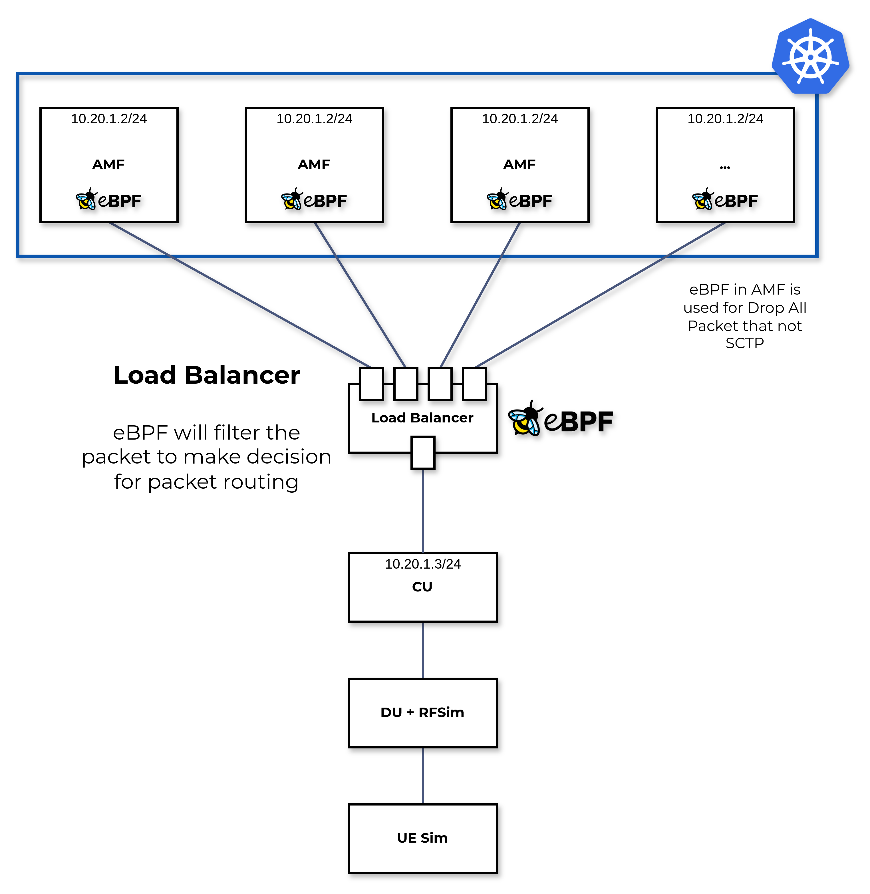
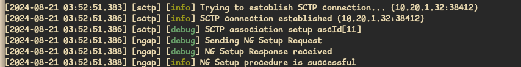
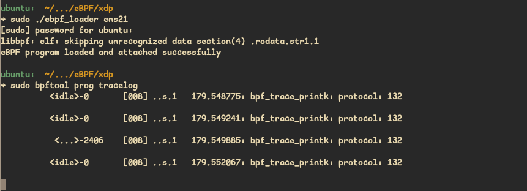
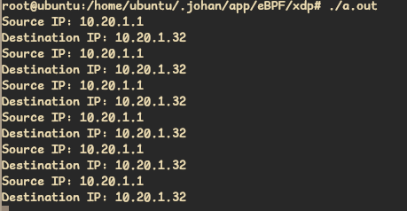

eBPF Trace SCTP Socket
eBPF SCTP Trace

Trace the Protocol ID and print it in kernel


Protocol ID for SCTP is 132 and the program was successfully trace data that contain SCTP packet from CU to AMF.
Almost all telco protocols are SCTP based, like NGAP, F1AP, nFAPI, E1AP, E2AP, etc. With this filtering process using eBPF, I argue (hypothetically) that the filtering process is much faster because the process is not involve kernel. With this approach I also argue that this filtering process is useful in telco technology, it can be used for security in RAN, observable the packet to get data for Traffic Control, handover and for RIC use cases.
#include "vmlinux.h"
#include <bpf/bpf_endian.h>
#include <bpf/bpf_helpers.h>
#define ETH_P_IP 0x0800
SEC("xdp")
int xdp_prog(struct xdp_md *ctx) {
void *data_end = (void *)(long)ctx->data_end;
void *data = (void *)(long)ctx->data;
struct ethhdr *eth = data;
if ((void *)(eth + 1) > data_end)
return XDP_PASS;
if (eth->h_proto == bpf_htons(ETH_P_IP)) {
struct iphdr *ipv4 = data + sizeof(*eth);
if ((void *)(ipv4 + 1) > data_end)
return XDP_PASS;
// Print the protocol number
bpf_printk("protocol: %u\n", ipv4->protocol);
}
return XDP_PASS;
}
char _license[] SEC("license") = "GPL";
This code will check the protocol, if protocol is SCTP, kernel will print sctp protocol id and the packet will PASS.
Trace Source IP and Destination IP and store the data in perf event
With some modification, we could filter tha packet like IP Src and IP Dst like below:
#include "vmlinux.h"
#include <bpf/bpf_endian.h>
#include <bpf/bpf_helpers.h>
#define ETH_P_IP 0x0800
struct flow_info {
__u32 src_ip;
__u32 dst_ip;
__u16 src_port;
__u16 dst_port;
__u8 proto;
};
struct {
__uint(type, BPF_MAP_TYPE_PERF_EVENT_ARRAY);
__uint(key_size, sizeof(__u32));
__uint(value_size, sizeof(__u32));
} events SEC(".maps");
SEC("xdp")
int xdp_prog(struct xdp_md *ctx) {
void *data_end = (void *)(long)ctx->data_end;
void *data = (void *)(long)ctx->data;
struct ethhdr *eth = data;
if ((void *)(eth + 1) > data_end)
return XDP_PASS;
if (eth->h_proto == bpf_htons(ETH_P_IP)) {
struct iphdr *ipv4 = data + sizeof(*eth);
if ((void *)(ipv4 + 1) > data_end)
return XDP_PASS;
// Print the protocol number
// bpf_printk("protocol: %u\n", ipv4->protocol);
// bpf_printk("IP Src: %d\n", bpf_ntohl(ipv4->saddr));
// bpf_printk("IP Dst: %d\n", bpf_ntohl(ipv4->daddr));
struct flow_info flow = {};
flow.src_ip = ipv4->saddr;
flow.dst_ip = ipv4->daddr;
flow.proto = ipv4->protocol;
bpf_perf_event_output(ctx, &events, BPF_F_CURRENT_CPU, &flow, sizeof(flow));
}
return XDP_PASS;
}
char _license[] SEC("license") = "GPL";

The data of the output will store in events file, to open the oytput or view the output we need the userspace application to view BPF_MAP_TYPE_PERF_EVENT_ARRAY like perf buffer in linux.
First thing to do before running the userspace program, we need to specify where the events of our bpf maps will store. To do this we need to do some commands like below:
The error bpf_obj_get: No such file or directory indicates that the BPF map at the specified path (/sys/fs/bpf/events) doesn’t exist or wasn’t created correctly.
To fix this issue, you need to ensure the following:
1. Ensure Your BPF Program Creates the Map
Make sure that your BPF program creates a BPF map and pins it to the BPF filesystem (usually mounted at /sys/fs/bpf/).
In your BPF program, you should define the map like this:
struct {
__uint(type, BPF_MAP_TYPE_PERF_EVENT_ARRAY);
__uint(max_entries, 128); // Number of CPUs
__type(key, u32);
__type(value, u32);
} events SEC(".maps");
To pin the map to the BPF filesystem, you can use the following code in the user-space program that loads your BPF program:
int map_fd = bpf_map__fd(skel->maps.events);
bpf_obj_pin(map_fd, "/sys/fs/bpf/events");
Or, if you’re manually loading the BPF program and pinning the map:
bpftool prog load my_bpf_program.o /sys/fs/bpf/my_bpf_prog
bpftool map pin id <map_id> /sys/fs/bpf/events
2. Mount the BPF Filesystem (if not already mounted)
Ensure that the BPF filesystem is mounted:
sudo mount -t bpf bpf /sys/fs/bpf/
This step may be required if you don’t have the BPF filesystem mounted on your system.
3. Load and Pin the Map Correctly
Make sure your user-space program or manual commands correctly load and pin the map in the BPF filesystem.
If you load the program manually and want to pin the map, you can use the bpftool utility:
-
Load the BPF program:
sudo bpftool prog load my_bpf_program.o /sys/fs/bpf/my_bpf_prog -
Pin the map:
sudo bpftool map pin id <map_id> /sys/fs/bpf/eventsReplace
<map_id>with the ID of your map, which you can find using:sudo bpftool map show
4. Verify the Map Exists
Once you’ve pinned the map, verify that it exists in the expected location:
ls /sys/fs/bpf/events
If the file exists, your program should be able to access it without the bpf_obj_get error.
Recap
- Ensure your BPF program creates and pins the map.
- Ensure the BPF filesystem is mounted.
- Load and pin the map correctly.
After following these steps, your user-space program should be able to access the BPF map without errors. If you still encounter issues, please provide more details about your BPF program setup.